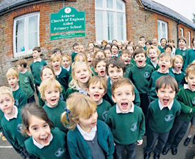
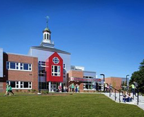

О нас
Санаторно-лесная школа — общеобразовательное учебное заведение, предназначенное для обучения детей дошкольного и школьного возраста (с 2 до 14 лет). Учебные занятия строятся с учётом двух важных положений: необходимости обучения по программе общеобразовательной школы и использования образовательного процесса с оздоровительной целью.
Вновь строящиеся здания с-л-ш размещают вблизи лесных, лесопарковых массивов на обособленных земельных участках, а также на внутриквартальных территориях жилых микрорайонов
История создания
 Санаторно-лесная школа — общеобразовательное учебное заведение, предназначенное для обучения детей дошкольного и школьного возраста (с 2 до 14 лет).
Учебные занятия строятся с учётом двух важных положений: необходимости обучения по программе общеобразовательной школы и использования образовательного процесса с оздоровительной целью
Вновь строящиеся здания с-л-ш размещают вблизи лесных, лесопарковых массивов на обособленных земельных участках, а также на внутриквартальных территориях жилых микрорайонов
“Уникум“ в цифрах
Общее число педагогических работников
Из них имеют:
- Высшую категорию - 31 чел.
- Первую категорию - 14 чел.
- Вторую категорию - 13 чел.
- Другое - 24 чел
Общее число сотрудников школы
- Доктор наук – 2
- Кандидат наук – 3
- Доцент ин. яз. и культурологии – 1
- Почетный работник общего
- образования РФ – 3
“Уникум“ в цифрах
 Санаторно-лесная школа — общеобразовательное учебное заведение, предназначенное для обучения детей дошкольного и школьного возраста (с 2 до 14 лет).
Учебные занятия строятся с учётом двух важных положений: необходимости обучения по программе общеобразовательной школы и использования образовательного процесса с оздоровительной целью
Вновь строящиеся здания с-л-ш размещают вблизи лесных, лесопарковых массивов на обособленных земельных участках, а также на внутриквартальных территориях жилых микрорайонов
Планы
Санаторно-лесная школа — общеобразовательное учебное заведение, предназначенное для обучения детей дошкольного и школьного возраста (с 2 до 14 лет).
Учебные занятия строятся с учётом двух важных положений: необходимости обучения по программе общеобразовательной школы и использования образовательного процесса с оздоровительной целью
Вновь строящиеся здания с-л-ш размещают вблизи лесных, лесопарковых массивов на обособленных земельных участках, а также на внутриквартальных территориях жилых микрорайонов
«Уникум» ставит своей задачей создание условий и возможностей для развития и совершенствования образовательного процесса в России, что является важнейшей общегосударственной задачей в деле возрождения, развития и процветания нашего государства.